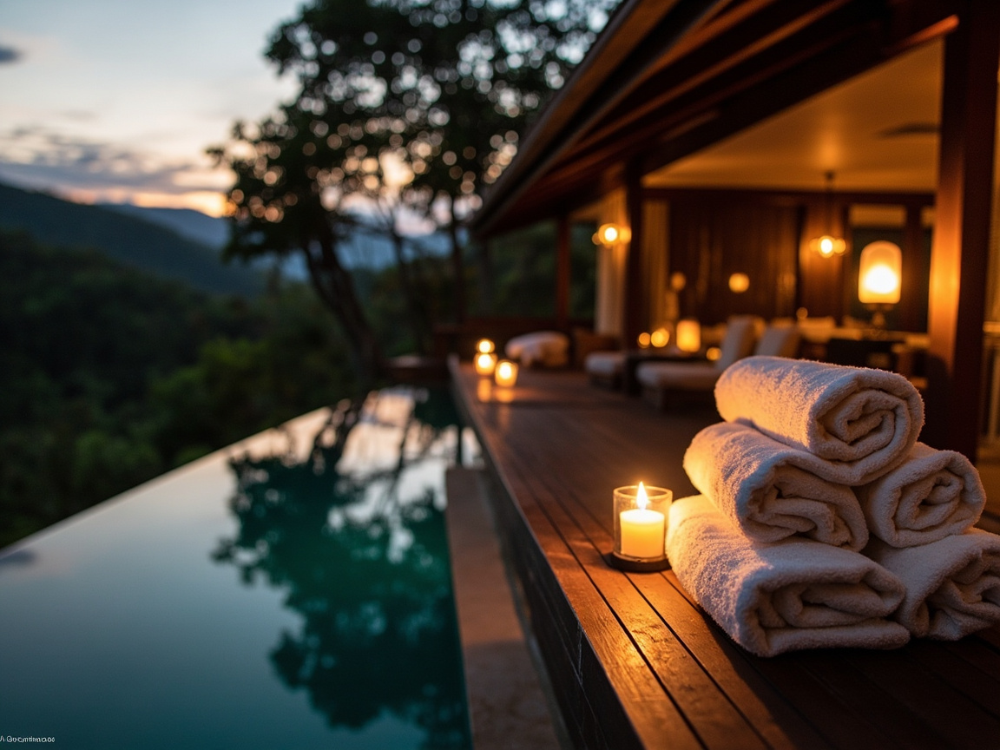
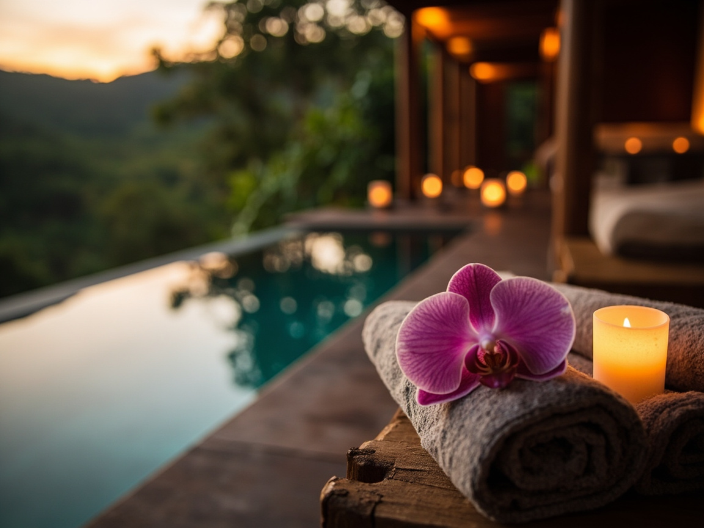
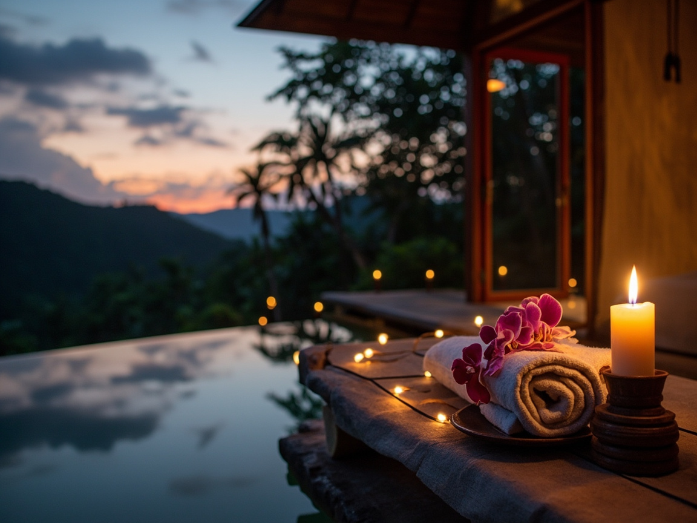

Stille, die fast weh tut
Kein Verkehr, kein Generator, kein WLAN im Zimmer. Nur das Atmen des Waldes — 47 dB nachts, gemessen am Bett. Schlaftiefs, die Sie seit Jahrzehnten nicht mehr kannten.

Zwölf Suiten, die im Regenwald verschwinden. Infinity-Pools über dem Blätterdach, Sternen-Nächte ohne Licht von irgendwo. Eine Lodge für jene, die das Langsame wieder lernen möchten.
Casa Verde wurde nicht auf den Wald gesetzt, sondern in ihn hineingefaltet. Jede der zwölf Suiten steht zwischen vorhandenen Bäumen — kein einziger wurde gefällt, um Platz zu machen. Die Konstruktion aus lokalem Zedernholz, erdigen Putzen und lebendem Grün verschmilzt nach wenigen Jahreszeiten so sehr mit dem Blätterdach, dass man die Lodge vom Tal aus kaum erkennt.
Wer hierher kommt, kauft keine Leistung. Er kauft Stille. Das Knarren des Holzes in der Nacht, den Ruf des Tucans um fünf Uhr morgens, das langsame Aufsteigen des Nebels über der Wolkenwald- Schlucht. Ein Ort für Menschen, deren Kalender voll war und deren Seele es nicht mehr war.

Zwölf Suiten, verteilt auf drei Hänge des Bergrückens. Keine teilt eine Wand mit einer anderen. Jede öffnet sich vollständig nach Süden, zum Tal hin — eine Glasfront, dahinter nur Luft, Vögel und das langsame Wandern der Wolken.
Das Interieur ist warm und dunkel: Zedernholz, Leinen in Erdfarben, handgetöpferte Waschschalen aus der Töpferei von San Luis. Kein Fernseher. Kein Kühlschrank-Brummen. Nur das Konzert des Waldes.
Kein Verkehr, kein Generator, kein WLAN im Zimmer. Nur das Atmen des Waldes — 47 dB nachts, gemessen am Bett. Schlaftiefs, die Sie seit Jahrzehnten nicht mehr kannten.
Unsere Lage auf 1.420 Metern liegt über der Lichtverschmutzung der Küste. Jede Suite hat eine Liegefläche unter freiem Himmel. Sterne, die man vom Hörbuch her kennt, aber nie selbst sah.
340 dokumentierte Arten im Reservat. Unser Ornithologe Javier führt Sie im Morgengrauen zum Quetzal-Brutplatz. Ferngläser und Schweigen inklusive.
Die Bergquelle oberhalb der Lodge speist Pools, Duschen und Küche. Klar, mineralisch, unbehandelt. Im Infinity-Pool scheint es, als schwämme man in den Wolken.
120 Sorten Obst, Gemüse und Kräuter auf eigenen Terrassen. Yucca, Malinche, Cilantro, Kaffee aus 1.600 Metern. Was nicht bei uns wächst, kommt von Bauern aus dem Tal.
Kein Programm, das Sie einhalten müssen. Massagen auf Bestellung, Yoga im Pavillon um sieben, Bibliothek mit 600 Bänden. Der Rest des Tages gehört Ihnen allein.

„Man kommt an, um anzukommen.— Ein Gast, Februar 2024
Alles andere erledigt der Berg.“
Unsere Köchin Mariana kocht, was der Tag hergibt. Das Menü steht nicht auf einer Karte — es steht im Garten, in den Beeten, an den Bäumen. Jeder Teller erzählt die Höhe, den Boden, die Stunde.
Fünf Gänge am Abend, serviert auf der offenen Terrasse über dem Tal. Dazu Kaffee aus eigenen Hängen, fermentiert in Zedernholz, geröstet über offenem Feuer.
Wir antworten persönlich innerhalb von 24 Stunden — nicht automatisiert.